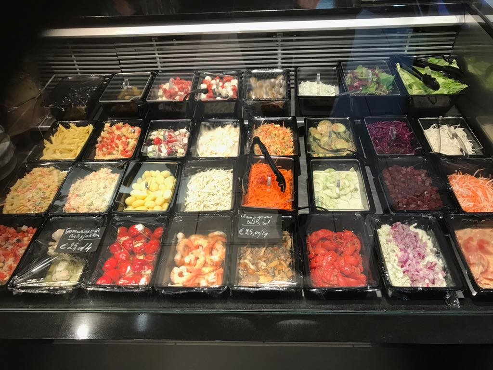
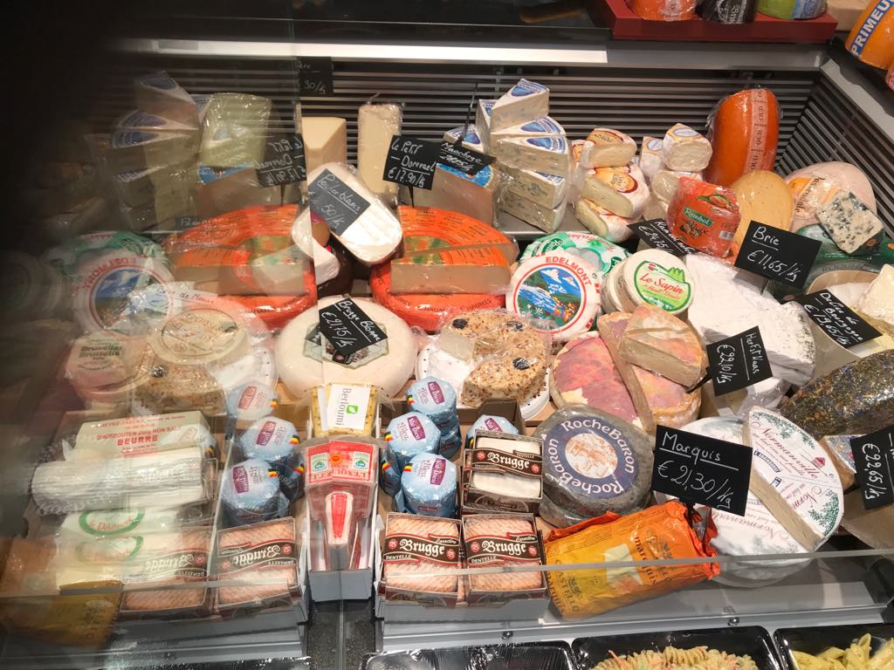
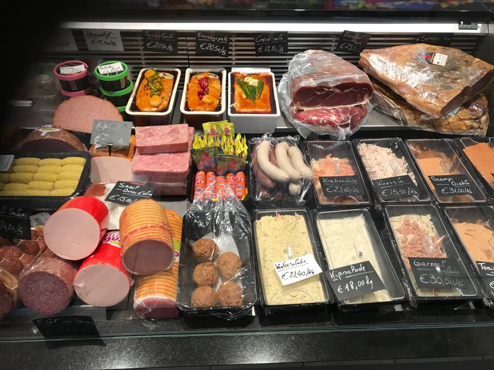

Saladebar
Foto saladebar



Beschikbaar beleg
- Mosterdspek
- Kalkoen salami
- Roma salami
- Chorizo
- Filet de saxe
- Boerenworst
- Frikadon
- Kipfilet
- Kop
- Bbq ham
- Beenham
- Uienconfijt
- Fazanten paté
- Everzwijn paté
- Crème paté
- Serrano ham
- Witte en zwarte trippen
- Wintersalade
- Scampi diabolique
- Tonijn wiskysaus
- Kipsalade
- Vleessalade
- Krabsalade
- Prepare
- mini salami pralinnen
- smout
- Citterio
- Salami balletje met truffel
- Mini salami
- Parmesan
- Cambozola
- Sint-Albray
- Perigoux
- Rambol met noten
- Passendaele
- Jonge kaas
- Belegen kaas
- Oude kaas
- Roque fort
- Delice de Bourgogne
- Brie
- Le sapin
- Edelmont
- Marquis
- Polder kaas
- Brugse blomme
- Tolko met ananas
- Herfst kaas
- Roche Baron
- Een variatie aan verschillende groeten & fruit
- en andere op aanvraag
- ...